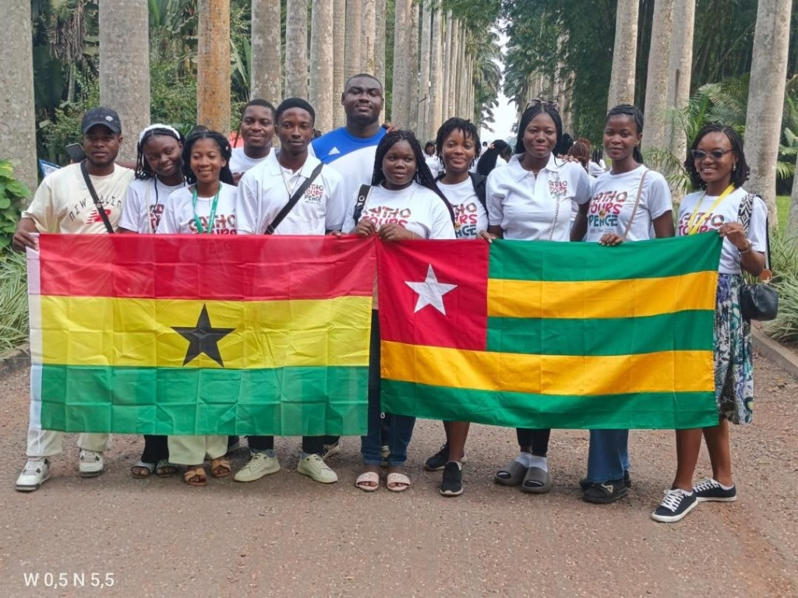
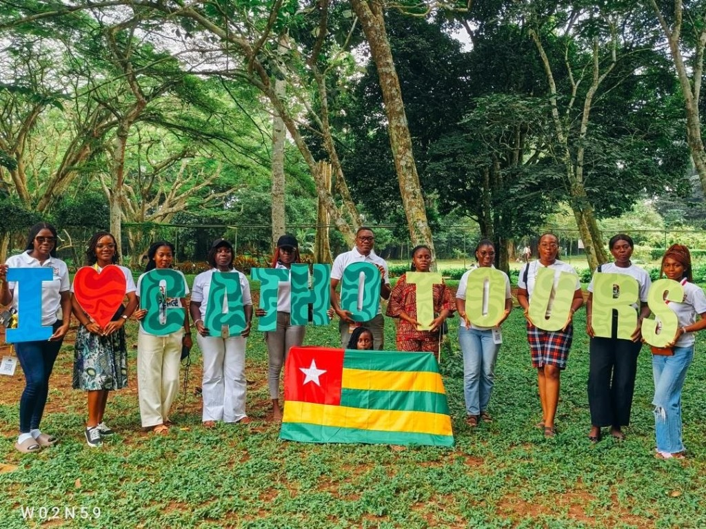
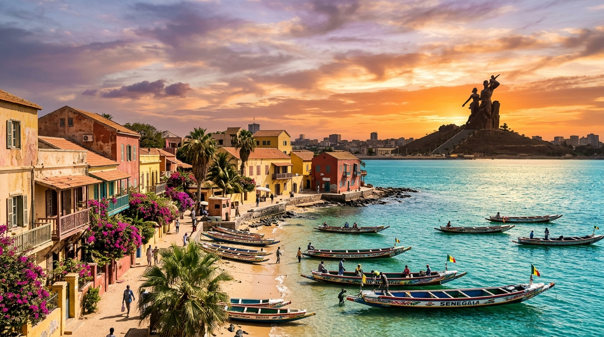

Voyager, Découvrir, Croire & Bâtir la Fraternité.
Bienvenue dans le portfolio vitrine de Catho Tour International. Une aventure humaine, culturelle et spirituelle qui rassemble la jeunesse autour de valeurs essentielles : la foi, la fraternité, la paix, le partage et l’ouverture culturelle.
Initiative née lors de sa mission sur la Paroisse Sainte-Thérèse de l’Enfant Jésus de Kégué (Togo), aujourd’hui en études en France. Ouverte aux jeunes catholiques comme aux jeunes d’autres confessions.

Fraternité sans frontières sur l’Allée Royale d’Aburi
Plus de 7 nationalités réunies autour de la foi et de la paix

« I CATHO TOURS »
Aburi Botanical Gardens (Fondé en 1890)
Chers frères et sœurs,
C’est avec une immense gratitude que nous vous présentons le portfolio de l’édition de Catho Tour International organisée au Ghana. Cette édition a marqué une étape importante dans l’évolution de cette initiative, en réunissant des jeunes autour de valeurs essentielles telles que la foi, la fraternité, la paix, le partage et l’ouverture culturelle.
À travers ce portfolio vitrine, nous souhaitons mettre en lumière les moments forts de cette aventure, ainsi que les différentes expériences vécues à travers les voyages, les célébrations religieuses, les découvertes culturelles et les rencontres qui ont contribué à enrichir chaque participant.
Origines de Catho Tour International
D’une initiative paroissiale à Kégué (Togo) jusqu’à une présence active dans 15 pays sur 3 continents.
Une initiative d’ouverture, de dialogue et de fraternité
Catho Tour International est une initiative portée par le Révérend Père Alain KODJOAKOU, qui était en mission sur la paroisse Sainte-Thérèse de l’Enfant Jésus de Kégué, et qui poursuit aujourd’hui ses études en France.
L’aventure a commencé sous le nom de Catho Tour, avec une première édition organisée au Bénin en 2024. L’objectif initial était de permettre aux jeunes Togolais de découvrir d’autres horizons à travers un voyage éducatif, culturel et spirituel. Ouverte aux jeunes catholiques comme aux jeunes d’autres confessions, cette initiative a été pensée comme un espace de découverte, de dialogue, de partage et de fraternité.
Fort du succès de cette première expérience et de la participation de jeunes venus de plus de sept pays lors de la deuxième édition au Ghana (« Catho Tour for Peace »), le projet a évolué pour devenir officiellement Catho Tour International.
Présent dans 15 Pays sur 3 Continents
Après le Bénin, le Ghana et la Côte d’Ivoire, et en route vers le Sénégal en 2027, notre réseau fédère la jeunesse sur trois continents :
Les 6 Sites Emblématiques Visités
Une expérience complète entre foi, culture, patrimoine naturel et mémoire historique à travers chaque étape majeure de notre parcours au Ghana.
Une Aventure Riche en Découvertes
Catho Tour International démontre que le voyage est bien plus qu’un simple déplacement : il devient un véritable espace de rencontre, de transmission et de partage.
La JRJ — Journées Ouest-Africaines de la Jeunesse
« Prenez courage : les jeunes catholiques, acteurs et agents de paix et d’espérance en Afrique de l’Ouest »
Une délégation de Catho Tour International a eu l’honneur de participer aux Journées Ouest-Africaines de la Jeunesse au Ghana, un grand rassemblement réunissant des jeunes catholiques venus de différents pays autour de la foi, de la fraternité et de l’engagement chrétien.
À travers les temps de prière, les célébrations eucharistiques et les interventions des évêques, un message fort s’est dégagé : la paix commence par nos actions quotidiennes, notre capacité à dialoguer, à accepter nos différences et à cultiver l’amour du prochain.
Devenir des témoins vivants de l’Évangile et des porteurs d’espérance au sein de nos communautés.
Prendre conscience de la valeur, de la place et de la mission des jeunes dans la construction d’un monde juste.
Mettre les outils numériques au service de l’évangélisation, du dialogue et de la fraternité.
Une mission sans frontières
Feuille de RoutePour Catho Tour International, cette participation représente bien plus qu’une présence à un événement religieux. Elle s’inscrit pleinement dans notre mission de rapprocher les jeunes au-delà des frontières :
Favoriser les échanges interculturels et spirituels durables entre pays.
Engager les jeunes dans des actions concrètes de paix et de solidarité.
Contribuer activement à une sous-région plus unie, pacifique et fraternelle.
Galerie Vitrine de l’Aventure
CATHO TOUR INTERNATIONAL 2027 — CAP SUR LE SÉNÉGAL !
Après une belle expérience au Ghana, Catho Tour International poursuit son voyage et pose ses valises au Sénégal en 2027 pour une nouvelle aventure placée sous le signe de la foi, de la découverte, du partage et de la fraternité.
Cette nouvelle édition sera l’occasion de partir à la découverte d’un pays riche de son histoire, de sa culture, de son patrimoine et de ses traditions. Mais Catho Tour, ce n’est pas seulement voyager : c’est voyager autrement. C’est prendre le temps de découvrir, de rencontrer, d’échanger, de partager notre foi et de créer des liens avec des personnes qui partagent les mêmes valeurs.
Découvertes culturelles, moments spirituels, rencontres enrichissantes, instants de convivialité et souvenirs à construire ensemble.
Visite des sites emblématiques et lieux incontournables du Sénégal avec nos délégations issues de 15 pays.
« Le Sénégal 2027 sera une nouvelle page de l’histoire de Catho Tour International. Et cette page, nous souhaitons l’écrire avec vous. Alors, êtes-vous prêts à embarquer pour cette nouvelle aventure ? »

Une destination à découvrir, une expérience à vivre, des souvenirs à partager.
Les Partenaires & Parties Prenantes
La concrétisation de ces ambitions repose sur la mobilisation de toutes les parties prenantes : autorités ecclésiastiques, institutions partenaires, acteurs éducatifs et culturels, organisations de jeunesse et partenaires techniques et financiers.
Faire du Voyage un Levier de Formation Humaine, Culturelle et Spirituelle
Une étape significative de rencontre et d’ouverture
La deuxième édition de Catho Tour International, organisée au Ghana, constitue une étape significative dans le développement de cette initiative dédiée à la jeunesse, à la rencontre interculturelle et à l’enrichissement spirituel. À travers les différentes activités menées, cette édition a permis de concrétiser les ambitions du projet en offrant aux participants un cadre privilégié de découverte, d’apprentissage, de partage et d’ouverture sur les réalités culturelles, historiques et ecclésiales de l’Afrique de l’Ouest.
Paix, fraternité et responsabilité dans la société
Les visites de sites patrimoniaux et naturels, les rencontres avec les communautés religieuses ainsi que la participation aux Journées Ouest-Africaines de la Jeunesse ont contribué à renforcer la portée éducative et spirituelle de cette expérience. Elles ont également favorisé la sensibilisation des jeunes aux enjeux de la paix, de la fraternité, de la responsabilité citoyenne et de leur engagement au sein de l’Église et de la société.
Construire positivement l’avenir de l’Afrique et du monde
En définitive, ce bilan constitue une base encourageante pour la poursuite de cette mission en direction du Sénégal en 2027. Il confirme la nécessité de promouvoir des initiatives qui associent découverte, formation, dialogue et engagement, afin de permettre à la jeunesse de mieux appréhender son environnement et de contribuer positivement à l’avenir de l’Afrique et du monde.
« Catho Tour International entend poursuivre cette ambition avec responsabilité, détermination et espérance, en consolidant ses acquis et en développant des partenariats durables au service d’une jeunesse actrice de paix, de dialogue et de progrès. »